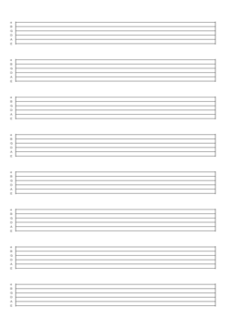
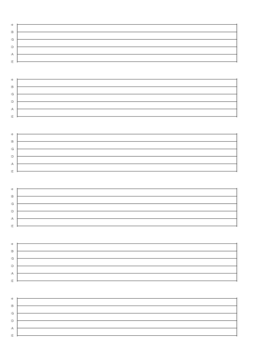
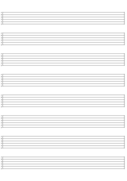
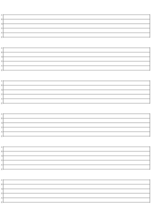

Narrow line spacing / Interligne fin
⬇ Download / Télécharger♪ Tablature

Narrow line spacing / Interligne fin
⬇ Download / Télécharger
Wide line spacing / Interligne large
⬇ Download / Télécharger
Narrow line spacing, no side margins / Interligne fin, sans marges
⬇ Download / Télécharger
Wide line spacing, no side margins / Interligne large, sans marges
⬇ Download / Télécharger